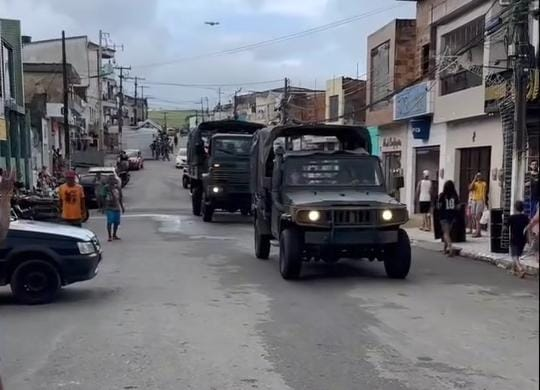

Missões AMC
Nesta seção encontra-se os registros das principais Missões realizadas pela Academia Major Ci, em Xexéu. Eventos na participação da AMC no desfile do 7 de Setembro, bem como a participação no Desfile Cívico de Xexéu, além de trazer a cidade a participação junto com o próprio Exército Brasileiro!
Desfile 7 de Setembro
-
+